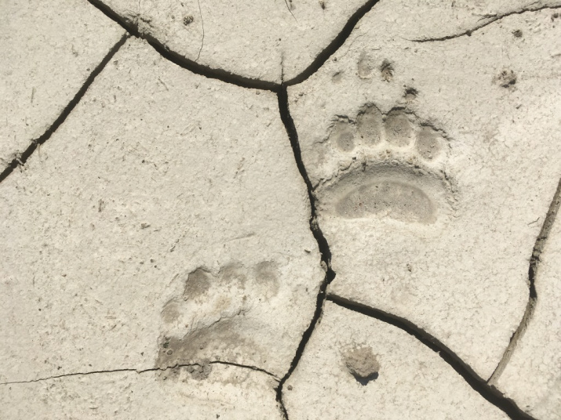

Бурый медведь
Типичный таёжный и лесной житель – бурый медведь – распространён практически во всей России, несмотря на разницу климатических поясов и биоценозов. Эти сильные и мощные животные обитают в чащах, лиственных, хвойных и смешанных лесов средней полосы, в сибирской тайге на Байкале, можно их наблюдать и в Кавказских горах, а также в среднеазиатских горных районах. Любят медведи дикорастущие ореховые и плодовые древесные породы, поэтому в тех местах, где эти растения встречаются, можно обнаружить и следы пребывания этого крупного хищника.
Внешность бурого медведя
Тело у бурого медведя мощное, с высокой холкой; голова массивная с небольшими ушами и глазами. Хвост короткий — 65—210 мм, едва выделяющийся из шерсти. Лапы сильные, с мощными, невтяжными когтями длиной 8—10 см, пятипалые, стопоходящие. Шерсть густая, равномерно окрашенная.
Медвежий след вряд ли перепутаешь с чьим-то другим, потому что:
медведь наступает на всю стопу полностью;
у него очень большие когти, которые не прячутся;
на всех лапах хищника по пять пальцев в ряд.
Когда бурый медведь ходит, у него ноги смотрят вовнутрь, что повышает его устойчивость. Носить даже на четырёх лапах такой вес, особенно, когда приходится нагуливать на зиму жир, медведю было бы непросто, если бы он опирался не на всю стопу целиком и не «забирал» лапами при ходьбе вовнутрь.

Передвигается зверь иноходью: попеременно шагая то правыми задней и передней ногами, то левыми. При этом его тело раскачивается из стороны в сторону, что придаёт его портрету ещё больше неуклюжести, однако это впечатление от «хозяина» настолько обманчиво, что люди надеются иногда от медведя убежать. Мишка, хоть и косолапый, но может при желании мчаться со скоростью 50 км/ч, что сравнимо со скоростью городского автобуса.
Чем питаются бурые медведи?
Являясь ближайшим родственником своего исключительно хищного полярного собрата, бурый медведь – зверь всеядный, вот почему он держится около растений, которые плодоносят. В пищу ему идут не только ягоды, фрукты и орехи, любит мишка полакомиться злаками, из-за чего может разорять поля, когда в лесу ему становится голодно. Также в пищу ему идут насекомые, из-за чего он может раскопать муравейник и поживиться его крошечными обитателями. Его интересуют как взрослые муравьи, так и их личинки. Не побрезгует мишка и червями, жуками и прочими насекомыми, не пропустит и растущий под деревом гриб.
Но самое главное, причем истинно гурманское пристрастие бурого медведя – дикий мёд. Лесные пчёлы строят свои соты в дуплах, которые хорошо разведывает этот главный лесной лакомка. Оттого хозяина тайги и зовут медведем – ведает, где мёд есть! Ну, а почему «хозяин», и так понятно – этот зверь достигает иногда 2,5 м в длину! Вес косолапого доходит до 700 кг. А вот американские особи могут потянуть и больше тонны!
Когда бурый медведь впадает в спячку, то он расходует до 80 кг собственного веса на поддержание жизнедеятельности. Поэтому его задача в летний период – накопить жир. Этим и объясняется всеядность животного. Благодаря своим большим размерам, огромному весу и недюжинной силе, дикий медведь способен нападать на многих животных, в том числе и на крупных хищников. В Азии его соперником может стать даже тигр, а в Европейской части России – волки. Одолеть медведя они могут только стаей. Одинокий волк рискует стать добычей косолапого.
Медвежата
Потомство бурый медведь производит один раз в два года. Медведица выводит детёнышей, находясь на зимовке в своей берлоге. Там, в ограниченном пространстве, ей легче согреть малышей, у которых не развит шёрстный покров, они не слышат и не видят. Питаются они молоком матери, и к моменту выхода из берлоги детёныши бурого медведя уже не только слышат и видят, но могут самостоятельно передвигаться. Всем премудростям жизни в дикой природе их учит мать, если у неё нет при себе старшего медвежонка от прошлого выводка. Чаще всего медведица оставляет при себе детёныша женского пола, чтобы воспитать будущую маму. Такой «медвежонок-девочка» становится няней для младших медвежат, не даёт им драться, учит лазать по деревьям и следит за ними во время купания. Называют эту няньку «медвежонок-пестун» – от слова «пестовать».